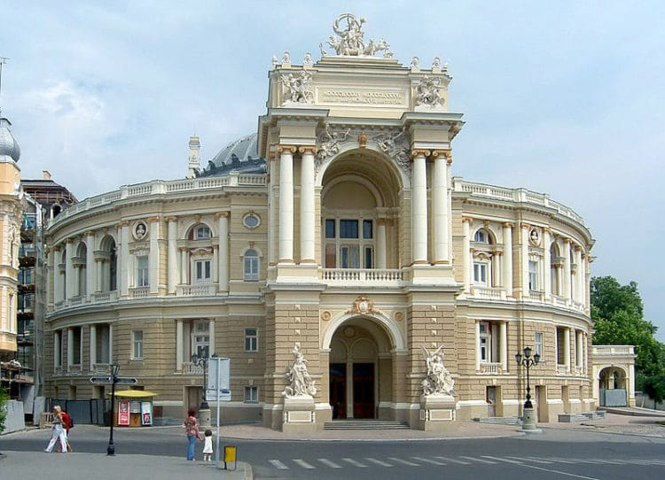

Прочитав этот обзор, вы узнаете про лучшие достопримечательности Одессы. Составляя свой рейтинг, мы учитывали отзывы опытных путешественников. С нашей статьей сложностей с тем, что посмотреть в Одессе на отдыхе или в командировке, у вас не возникнет.
Перечислять все интересные места Одессы можно было бы очень долго. Поэтому мы перечислим Вам только про наиболее увлекательные и популярные экскурсии в Одессе:
Одесский театр оперы и балета
Потёмкинская лестница
Памятник Дюку де Ришелье
Дерибасовская улица
Приморский бульвар
Воронцовский дворец
Шахский дворец
Спасо-Преображенский собор
Свято-Успенский монастырь
Пассаж
Гостиница Большая Московская
Гостиница Бристоль
Дом-стена
Дом Фальц-Фейна
Одесский музей западного и восточного искусства
Одесский художественный музей
Археологический музей
Одесские катакомбы
Тёщин мост
Памятник жене моряка
Рынок «Привоз»
Городской парк
Парк Шевченко
Одесский зоопарк
Одесский дельфинарий «Немо»
Курортная зона Аркадия
Что посмотреть в Одессе в первую очередь
Одесский театр оперы и балета

Некоторые подробности Вы можете просмотреть на оффициальном сайте
Ответьте на несколько вопросов ниже
Какие места Вы хотели бы посетить в первую очередь?
С какой экскурсии Вы бы хотели начать знакомство с Одессой
Впишите свои контакты и пожелания в поле ниже и отправьте данные